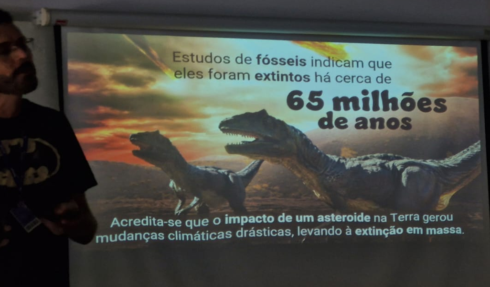
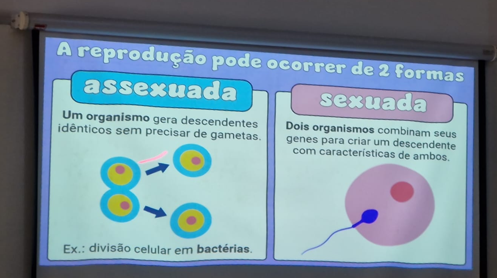
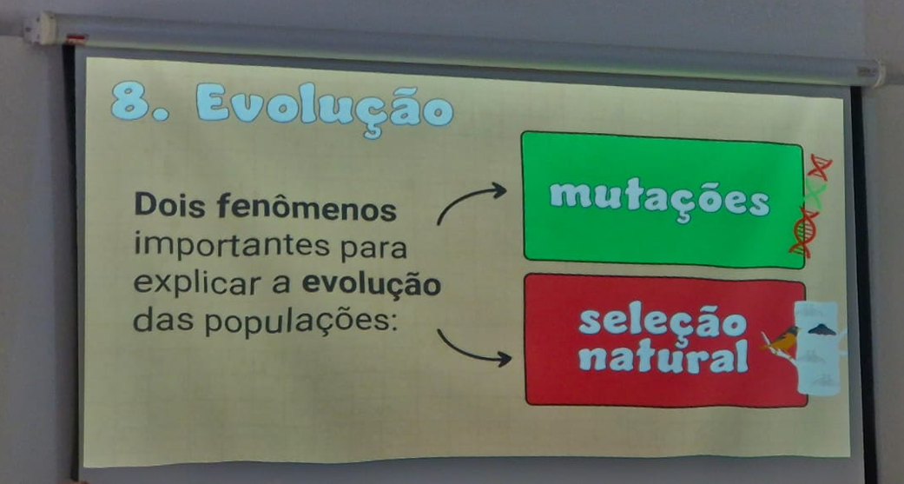
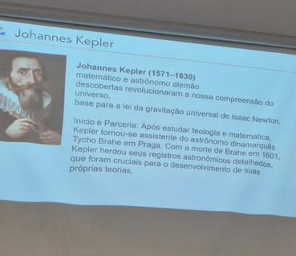
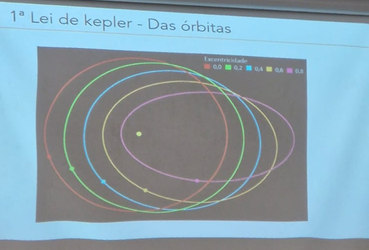
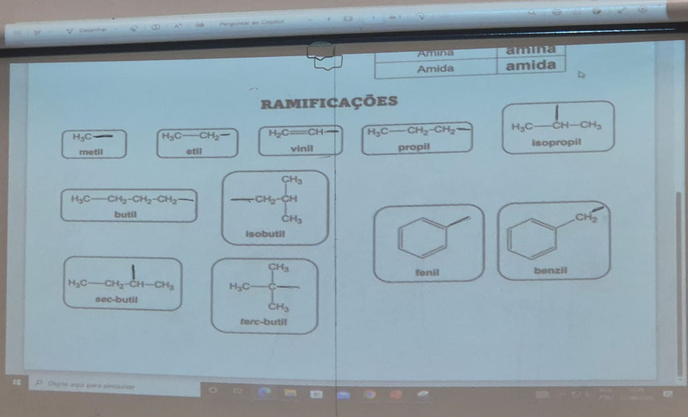
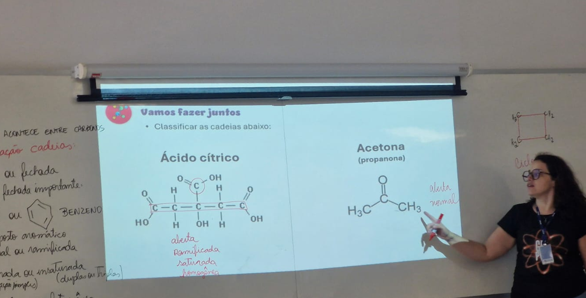
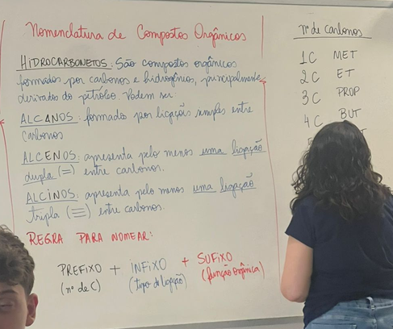

Áreas do Saber • Ciências da Natureza
Ciências da Natureza
Registros, anotações de aula e práticas desenvolvidas em Biologia, Física e Química ao longo do Ensino Médio.
Biologia
Estudei a organização celular, os mecanismos de reprodução sexuada e assexuada, o crescimento e o desenvolvimento dos organismos e os princípios da evolução e classificação dos grupos animais. Também aprofundei os conceitos de genética (genes e hereditariedade) e o estudo de vírus e doenças virais, conectando biologia molecular à saúde pública.


Física
Revisei e aprofundei a mecânica clássica, analisando movimentos uniformes e uniformemente variados, as Leis de Newton e a gravitação universal, incluindo órbitas planetárias e as Leis de Kepler. Também conectei esses fundamentos aos conceitos de energia e eletricidade aplicados ao cotidiano e às provas do ENEM.


Química
O foco principal foi a Química Orgânica, aprendendo a identificar compostos, classificar cadeias carbônicas e ler e escrever fórmulas moleculares e estruturais. Esse conteúdo foi complementado pelo estudo das propriedades dos compostos orgânicos e das transformações químicas cobradas nos vestibulares e no ENEM.


